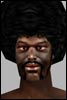

Last Thread Next Thread Last Thread Next Thread  |
| Author | Thread |
| Zeroshift Supa Leet  Registered: Feb 2002 | ...is the players. These greedy little powergaming wh0res. They exploit and powerlevel their way to the top, then camp all the unique mobs for ebay. Whenever they discover a new quest they horde it to themselfs so they can have a tiny edge over everyone in PvP. This wouldn't be so bad if the quests weren't so stupid and hard to get into. The only way to figure out these quests is to get GM or ark help, which these people probably do. The only reason we have the quests we do is because someone decided to blow the lid on the "secret" and post it somewhere. That is how we got the alvin quest. The blame can't be throw entirely at the players... FC is even worse for allowing such an incredibly stupid way of handling quests be inplemented. Never in my 5 years of MMORPG'ing have I ever witnessed such a bad idea as their version of "quests". I would never suspect that anyone would make the same mistakes EQ did and in such full force. AC had such a wonderful camp free system where everyone shares their knowledge about a quest. FC obviously never even knew Asheron's Call exsisted. |
 May 5th, 2002 06:25 May 5th, 2002 06:25 | #1 |
| Balderac Supa Leet Registered: Nov 2001 | AGREE !!! |
| May 5th, 2002 08:15 | #2 |
| tool Soleet  Registered: May 2001 | Re: The problem with this game... quote:yes my level 25 agent is going to these level 80+ static dungeons and camping these items so you cant, but I sure as hell dont remember ever doing that  . and I suppose all those level 1's are doing the samething to, since according to you EVERYONE is doing it. . and I suppose all those level 1's are doing the samething to, since according to you EVERYONE is doing it. Think with your head not your ass please! |
| May 5th, 2002 15:32 | #3 |
| Xenlee Leetas  Registered: Feb 2002 | Asherons Call = Camp Free All i gotta say about that is this.... HAHAHAHAHAHAHAHHAHAHAHAHAHAHAHAHAHAHAHAHAHAHAHAHAH HAHAHAHAHAHAHAHHAHHAHAHAHAHHAHA You Obviously never played Asherons Call. I Played Asherons Call for almost 2 years and that game was HELA camped. I remember people setting up macros so they could leave an archer on a perch in the Olthoi Dungeon all day and night collecting exp. I remember PERSONALLY sitting on a perch outside camping olthoi. I remember going through every good dungeon in that game and finding HORDES of campers going for exp. I remember every month a new content patch coming out and with it a lineup of people camping the new boss mob to get his items. I know there was camping for even the stupidest of things (the bunny master title for instance). Asherons Call like EQ and this game was a campers paradise, atleast this game gives us a random mission generator to get our own lil dungeon to go to without campers and makes us explore the world. Although i am aware that the redundancy of the mission system does get extremely tedious after a while. The only difference is that the good stuff in AC spawned every couple of minutes (longest spawn time i remember was 7 minutes) while here its 2 hours. |
| May 5th, 2002 15:45 | #4 |
| Phinger Supa Leet  Registered: Dec 2001 | Actually I played Asherons Call and the camping your talking about for exp macros I could care less for. Zeroshift is talking about a Spawn rate of once every 18 hours for a unique Item that isnt generated by your stupid mission terminals. Duly camped by a dedicated guild and group of players that know the time the location and try and keep secret for as long as possible. It an awful situation.Its not a quest....its a quest in frustration. Asherons Call Maybe had you searching for items but hell you never waited for anything. You would wait for each patch month....everyone would blast round find stuff. If it was an uber item dont go near the spawn for a week.....then you could watlz in there and get your item. From Atlan weapons....and the stones. Focus stone, Bandit weapons, Hoary robes....Shadow Armor. Mage armor, the Lugain items and quest(that was a great quest on huge open plains with bloulders sailing thru the air teams running and attacking), Sifli of Crimson Stars, new spells.....the whole lot did not involve camping. Any new quest introduced within 2 months was empty.....you could just go and get your item with the fun of questing and no grief.And it may have required gettinga rare drop off a random monster ...say Organic Acid of certain breed of spider( which was all over Direlands...kill enough Spiders you would get your acid). the only quest that they screwed with was aerlinthe...which was a great quest but as high levels got more numerous....they could make the quest work like clockwork with characters set up in all the bad areas ...drop the items bam bam bam and you would have aerlinthe spawn every 5 mins....that was meant to be a huge quest and got cheapened and Turbines fix just made the quest awful. Personally I reckon AC got it about the best they could. Turbine knew players dont have the time....they get in a party quest thru a dungeon and get to a stone......and you had to wait 30 mins for the next stone? What did they do....they made the stones appear after 2 mins. No grief players pinching kills no waiting nuthing. They had stuff on timers....once you did it you couldnt get another. Stuff was no drop. so you couldnt trade it or sell it. There was no reason to keep anything a secret in AC. Because once you got it....you had to show the item off...and say woot great quest you have to go get yourself this item. the only goal in Ac was the first to get the it,....well that lets the elitist show off. After that it was just fun. THe Lab director in Foremans Office should be like that....you get a team togther.....you battle down there....Lab director is there. But another team is in front of you. They kill him and loot. 5 mins later he spawns again...they kill and loot.....they are done they leave. Lab director spawns and bam each team member only has to stick round for 30 mins to get items for all....no camping no bull**** no griefers arriving and pinching your turn at the boss. Or Mcnugget for his shades....Guild needs to get a set of shades for their new member who is a Nanomage class. So they go round there ...another team kills him....They leave. Other guild waits 5 mins Mcnugget is back they have a ripper of a fight bringing him down. everyone else has a set of glasses....so they cant pick up another...and the new guy gets his glasses. Funcom just has no idea....they think by putting uber items in game and denying them to all but the most powerful guilds and players...is a way to satisfy a gamer. It isnt. It caters for greed selfishness and no fair play or fun. Phinger 178 NT First Time Phingers agrees with Zeroshift on anything Last edited by Fingers on May 5th, 2002 at 16:17 |
| May 5th, 2002 16:14 | #5 |
| Cheddar Soleet  Registered: Nov 2001 | Good lord, Funcom swore up and down they'd never have a camp-the-baddy-get-the-goody system like EQ... then they went and did it. Granted, they polled the player base and some peeps wanted it, but the implementation blows like Fingers spells out. AC was and still is much better in the quest department. Not only are there a mind numbing amount of quests, but Joe Average can get in on the action just by hangin at the sub and joining a pick-up group. Funcom, want to improve your mob camping situation? Do these two things every time: 1. Crank up the spawn rates. 2. Make each and every reward item no-drop and thus non-ebayable. |
| May 5th, 2002 16:40 | #6 |
| Sunraven Soleet  Registered: Nov 2001 | Bump Never played AC but from what you have said it saounds like a good system. Personal timers rather than spawn timers sounds so much better. |
| May 5th, 2002 17:27 | #7 |
| Zeroshift Supa Leet Registered: Feb 2002 | AC was infinately better than this crap. Mobs and unique items spawned within a matter of seconds, or minutes so everyone in your party could get one. Then you would be out of there and the next group gets the dungeon to themself. Unique items also had personal timers ranging from 24hours to 4 months. Plus all the good items were no drop... No more ebay campers. |
| May 5th, 2002 19:15 | #8 |
| ouzzelle Phear Leet  Registered: Jan 2002 | no kiddin Zero....  , , FC, c'mon the new spawn rate for MKII armor is DISGUSTING |
| May 5th, 2002 19:23 | #9 |
| Bionitrous Supa Leet  Registered: Jul 2001 | Players wanted unique and special items. They wanted special monsters that took a whole guild to kill. What they didn't want were these items to be ridiculously rare and to have to fight with other players and put up with griefing and poor sportsmanship to obtain them. What good is the Tarasque in the game if it is not an option for 99% of the players in the game. How many high level players 150+ do you think finally quit the game without ever being able to take their friends in there and attempt Camelot dungeon because of the bull **** that goes on in there? How many 100+ crats never get their crat suit because it's a useless waste of content to get you five buddies and fight your way through the whole dungeon to find 6 160+ enforcers having a tea party there waiting for him to 'pop'? Don't forget the Dodga/Alvin abortion of quest. Many don't even bother with the nonsense involved with that. Neutrals don't even have an option for that quest. The killing or tracking of the robots is supposed to be the fun part. That's utterly spoiled by having to wait in line for upwards of ten hours to be even issued the mission. Neleb is about the only palatable implemention of this crap in the whole game We wanted cool stuff. We wanted cool monsters. Most of us didn't want the 'rare' bull ****. That only leads to a society of 'haves' and 'have nots'. There should be enough of this type of content for everyone such that is would take a long long time to get it all. If there were thirty monsters like Tarasque in little mini-dungeons, you could be rest assured that one would always be available for any guild powerful enough to defeat it without having to relinquish the entire advanced content of the game to four or five guilds. This situation sucks balls plain and simple. It's just about the worst part of the game right now. My guild is slowly decrepifying due to the fact that the only viable option for simply signing on and seeking some action is another mission. I know for a fact that our guild with maybe three or four good friends from other guilds could give that Tarasque a fight for his money. I know for a fact that we'd have a blast win or lose. The fact is that we have no hope of competing with the people in that place who will either try to grief us, kill us outright, or otherwise spoil our entire play session. Once again, relegated to the missions. And don't forget the fact that the damn thing probably wouldn't even be there after we fight for hours to get there. I repeat: the worst part of the game and a sin of an implementation. |
| May 5th, 2002 21:32 | #10 |
| Zeroshift Supa Leet Registered: Feb 2002 | quote: What FC didn't realise is that you don't have to use the EQ system to make quests epic. AC has their share of epic quests. I went on the virindi amulet quest and it took about 80 people to complete it. That's right, 80+. And we weren't in the same guild either. See, because in AC you don't have to be in an uber guild to go on the big quests, you simply post on the boards you want to start up a quest and everyone will come from across the lands to join you. The reason these unique mobs are guild only in AO is because no one wants to sit around for a week camping a mob to help total strangers get lewt. In AC the virindi mob that dropped the amulet respawned in 10 minutes, but had a personal quest timer on it. |
| May 6th, 2002 03:45 | #11 |
| Saruzi Supa Leet  Registered: Dec 2001 | Let me list the source of all problems with this game, they can be listed in two words. Funcom Players* Am I not right? * Do note that some players are the only thing that are 'right' in this game. |
| May 6th, 2002 04:05 | #12 |
| Phinger Supa Leet Registered: Dec 2001 | quote: yeah the virindi quest was great fun....Item was tradeable.....but you had a personal timer and dungeon was capped so only lower levels could get item, they would do it once for themselves then do itagain for another when timer expired so you could trade it to a higher level for something you needed. That quest players kept going back for. And there was no GRIEF and a damn lot of fun. I enjoyed the lugain quest because it was out in the open....the last camp with the hollow boulders that went thru magic armor like knife thru butter ....sailing all over the place. Woot that was fun....You kill one lugain and twenty boulders would sail in from the horizon. Everyone was dashing around it Felt like a battlefield. put timers on items if you want item to become tradeable. So one player just doesnt go down their and camp the items for a week on end...he gets one...than cant get another for 1 month. Keeps item reasonably rare. Stops the camping crap. Gives everyone a fair chance at doing the mob. I enjoyed the Mage armor quest......it was basically a solo quest....still challenging...only thing you made need help with was getting some kindling stones. Doors levers and the like....but there was always players hunting in there looking for uber loot. Get a brain Funcom go buy a copy of Asherons Call and do the quests they have in the game.....and then you will see some great ideas for quests. Phinger 179 NT |
| May 6th, 2002 07:01 | #13 |
| Gold Phear Leet  Registered: Dec 2001 | 2 things 1. www.cityofheroes.com, no camping in that game 2. Powerplayers don't ruin ao. Whiners (read u) and Funcom are ruining this game. |
| May 8th, 2002 21:32 | #14 |
| SuupaSayen Phear Leet  Registered: Nov 2001 | *bump* I spent 2 hours waiting for tri-plumbo, I shoulda been able to fight my way in and killed him in less than 15. |
| May 8th, 2002 21:56 | #15 |
| Keits Leet Registered: Feb 2002 | Yes, I liked AC's quest system. I say, make the "rare" npc's that drop the special items spawn every 30 mins to a hour, make the item no drop, no give and beef up the npc's some. That way people wont camp them just to sell it on ebay. Heck, I would even make the items, lets take, the shades of lub, level 50 to wear plus you need to be a nanomage. |
| May 9th, 2002 09:57 | #16 |
| The saved copy (Funcom's forum archive, saved by the Wayback Machine in 2025) |
All times are GMT.